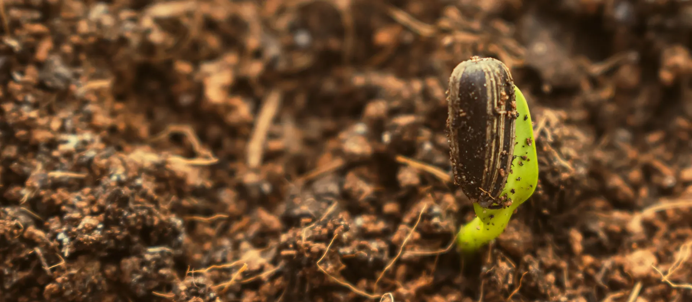

Tout commence par une graine.
Oignon, tomate, chou et piment en sachets de 5 g. Livrés à Dakar en 24 à 48 h, avec la fiche de culture.
Quatre semences pour la saison sèche
Toute la boutique
Avant l'ensachage
Chaque lot est mis à germer avant d'être ensaché.
Au dos du sachet, un QR code ouvre la fiche de culture de la variété.
Octobre
Lancez vos pépinières de saison sèche.
Oignon, tomate, chou et piment se sèment tous en pépinière à partir d'octobre. Préparez vos planches à l'ombre et repiquez 4 à 8 semaines plus tard selon l'espèce.
Voir le calendrier completCommander
Ajoutez vos sachets au panier, laissez votre numéro et votre quartier. On vous appelle pour confirmer, puis on livre : 24 à 48 h à Dakar, 3 à 5 jours en région. Vous payez par Wave, Orange Money ou en espèces à la livraison.
Une question sur vos cultures ?
L'équipe répond sur WhatsApp, en français et en wolof.
Écrire sur WhatsApp